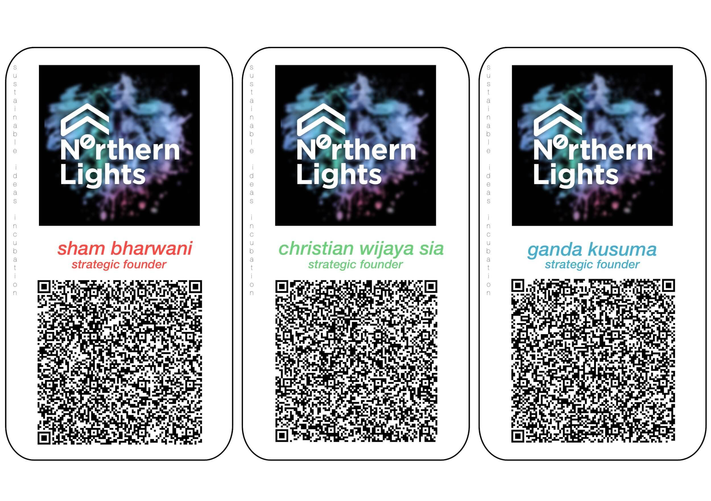

N0RTHERN LIGHTS
STRATEGIC FOUNDERS
SEASONED BABY BOOMERS+
SHAM BHARWANI
His passion for cutting edge research and technology is coupled with a commitment to providing today's millennials with skills and opportunity. This drove him together with his co-founders to start N0RTHERN LIGHTS who's open for millennials to be their equal partner. He is a firm believer that Millennials who believes in NEW DIGITAL TECHNOLOGY of today as second nature, need to be coupled with TRIED, TESTED AND TRUSTED BUSINESS WISDOM, a trait all FOUNDERS OF N0RTHERN LIGHTS (all SEASONED TECH SAVVY BABY BOOMERS ) posses in order to faster penetrate and redefine current Business Practices.
In a personal capacity (he is a veteran in BEDDING TECHNOLOGY and Industry), he invented a new spring bed technology, shying away from the use of metal spring to avoid corrosion, by using a superior non corrosive material as a spring, heavy duty PLASTICS. Hence the name PLASSPRING BED is introduced to the market. His marketing genius, demoed a real truck running on top of the PLASSPRING BED which put an end to speculations that Plastics cannot be as strong a spring as a Metal spring.
WORK EXPERIENCE:
N0RTHERN LIGHTS Strategic Founder (Present)
As President and CEO of PT. Dunlopillo Indonesia ,has over 30 years of hands-on experience as a visionary and strategic planner in leading, directing, and advancing PT Dunlopillo Indonesia.
Currently responsible for leading one of the biggest latex manufacturer in Asia. The company, under his leadership, has received numerous awards and certifications including ISO, MURI (Museum Rekor Dunia Indonesia), Superbrands, and various marketing awards.
Also as the owner of New Sanggar Indah and Fabric Library , both a furniture and fabric showroom, which holds the exclusive rights to sell many international (American and European) brands in Indonesia.
Skills and Competencies
- Thinking through first principles
- Marketing
- Creativity
- Goal-Oriented
- Resiliency
- Future Focused
- Leadership
- Time Management
- Persistence
- Turning Ideas into Companies
- Long Term Thinking
CHRISTIAN SIA
A veteran of a trained Civil Engineer Professional from an engineer to Director Level and, after taking a Master's degree in Management Accounting, changing his path to be a successful Entrepreneur Founders of 2 very distinct businesses in Property and Hospitality Industry in a career spanning of 35 years.
ENTREPRENEURSHIP EXPERIENCE:
N0RTHERN LIGHTS Strategic Founder (Present)
FOUNDER OF D'COST RESTAURANT CHAIN (2006-Present)
FOUNDER OF PASAR MOBIL KEMAYORAN (1995-2013): 200 units New and Used Car Showrooms & 600 units Spare Part Kiosks.
FREELANCE MARKETING DIRECTOR (1997-1998): Marketing Director Ad-Interim for Property Developers in Jakarta
Ancol Baru, Ancol, Jakarta Utara, Taman Palem Lestari, Cengkareng, Jakarta Barat, Bumi Anggrek & Taman Kebalen, Bekasi Barat
FREELANCE ENGINEERING SOFTWARE DEVELOPER (1982-1983): High Rise Concrete and Steel Structure Computer Analysis (basic coding) for Casio programmable calculators, Apple II computers and IBM PC computers.
EMPLOYMENT EXPERIENCE:
SINAR MAS GROUP REAL ESTATE DIVISION (1984-1994): Vice President ➔ Director ➔ Senior Director of PT. Duta Pertiwi
ITC Mangga Dua, ITC Roxy Mas shop-houses & mobile phone centre, Mangga Dua Mall shophouses and shops, Dusit Mangga Dua Computer Center.
Engineer ➔ Manager ➔ Managing Director of PT. Putra Satria Prima (1990-1994): Managed the design, construction, supervision, marketing and property management of Bank Internasional Indonesia Buildings in Jakarta, Surabaya, Medan, Bandung and Semarang.
Managed the design, construction and supervision of Indah Kiat, Pulp and Paper Plant, Serang, Banten.
Managed the design, construction and supervision of Tjiwi Kimia, Pulp and Paper Plant, Mojokerto, East Java.
Managed the design, construction and supervision of Bimoli Palm Kernel Oil Mill in Belawan, Medan, North Sumatera.
INDULEXCO ENGINEERING CONSULTANT (Structural Engineer) (1983-1984): Helped Senior Structural Engineers design a building by using a Casio Programmable Calculator which is much more time efficient in comparison to the traditional method.
CIVIL ENGINEERING LECTURER at Tarumanagara University & Ukrida University (1983-1984): Assistant Lecturer for Concrete Construction Structural Analysis - Tarumanagara University.
Lecturer for Concrete Construction Structural Analysis - Ukrida University.
GANDA KUSUMA
A 35 years veteran professional from Trainee to C-Level of Large Public Companies. Then as Senior Consultant & Coach for various Local Companies and Government Regulator and Consortium.
A blend of multinational corporations, local public corporations, cross border countries as well as local domiciled, with a scope of experience from IT Vendor Sales Marketing, Consumer Financial Services, Business Development & Value Creation, Creating New “Startup” Line of Business within Corporation, vast Business Partnership & Alliances experiences as recipient of partner companies, product & services, Business Advisory, Business Process Re-engineering, Consulting and Coaching.
TRACK RECORDS:
N0RTHERN LIGHTS Strategic Founder (Present)
Senior Consultant and Coach doing Consulting for Payment Systems Technology Companies as well as Consortium Members in BANK INDONESIA's Led Online Payment Systems Initiatives: New Indonesia's QRIS standard, Electronic Billings, Presentments and Payments (2015 - 2019)
PT. Astra International, Tbk.: CIO Astra International, Commissioner of PT. Astragraphia IT (2001 - 2014)
The first in Indonesia and Asia to implement large SAP platform in a Wintel ecosystem. The first to connect .NET web-based applications and native Android mobile apps to an SAP backend for field workers—achieving unprecedented cost reduction corporate-wide, allowing for exponential systems growth. The systems became the largest .NET application systems in Asia in terms of number of users, transaction volumes, and revenue processed. The systems process all transactions of Indonesia's 51% market share in automotive retail systems.
Standard Chartered Consumer Banking Worldwide Regional Head Office in Singapore: Region Head Consumer Banking E-Commerce (1999 - 2001)
PT. Bank Bali (currently Bank Permata): VP of Business Development & Alliances, Sr. VP Product Development, Executive VP and Statutory Boards of Director: Director of Consumer Banking & IT (1991 - 1999)
Responsible for architecting all E-Banking Channels in the Bank, which became the standard of today's banking systems architecture.
The first to implement Online Maestro/MasterCard Debit Card in Indonesia and launched the first cross-company, cross-industry retail loyalty program in Indonesia.
Responsible for Y2K project implementation across the bank's consumer banking systems by the turn of the century.
IBM Indonesia: Principal Leader of a new practice and new business in IBM Indonesia: Country Head Systems Integrations & Professional Services (1989 - 1991)
Grew the Systems Integration & Professional Services business (non-IBM hardware & software) revenue from non-existent to USD 100,000,000 of annual revenue in 3 years.
Achieved Three Hundred Percent Clubs in 3 years on quota (1989–1991) and 1 Golden Circle Club for almost doubling annual quota target in 1991.
IBM Asia Pacific HQ in Hong Kong: Special Revenue Program Manager, structuring large mega deals in IBM Asia Pacific countries (1987 - 1988)
IBM Indonesia: (1984 - 1987)
Large Accounts Sales Marketing: Country Sales Manager Award, Three Hundred Percent Clubs in 3 years on quota.
Here Are List of N0RTHERN LIGHTS STRATEGIC FOUNDERS
and Each of Their Business Card

Scan the contact QRcode above to automatically populate your CONTACT with contact of any N0RTHERN LIGHTS Strategic Founder. If you have any needs for other particular details like Mobile, Skype, WhatsApp, Slack or Telegram you can contact the special email address listed in the QRcode: request_mynumber@icloud.com and state what you need.